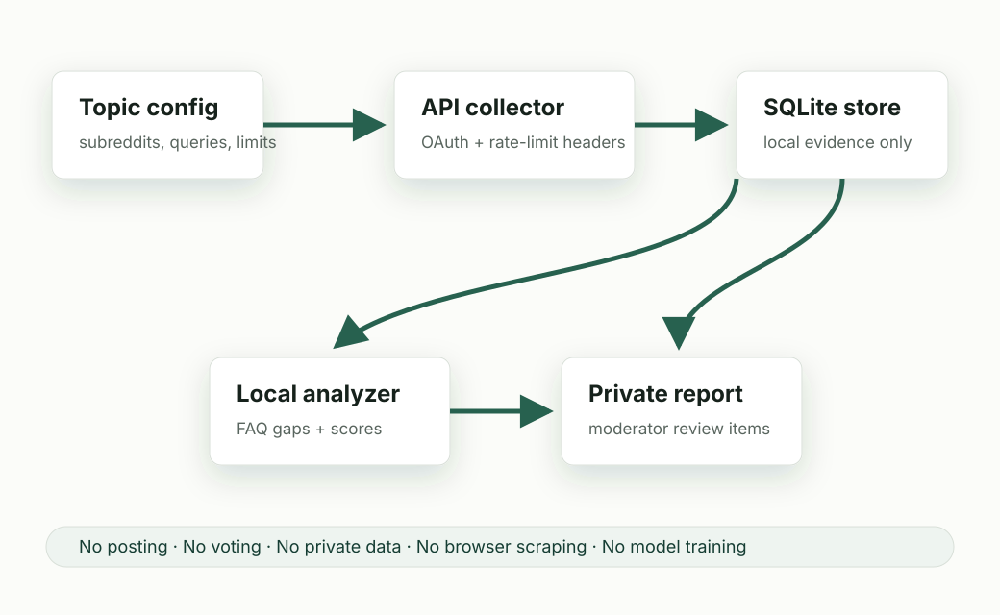

Read-only behavior
No posting, commenting, voting, messaging, automated moderation actions, or account automation.
Read-only Data API prototype
This prototype uses approved OAuth access, small topic-scoped queries, and local analysis to identify recurring questions, rule confusion, and onboarding friction in public community discussions. It does not post, vote, message, scrape, moderate automatically, or train a model on Reddit data.
$ rnr collect --dry-run
planned_requests: 90
mode: read_only
store_author: false
$ rnr analyze-local
signals:
repeated_question
rule_confusion
onboarding_friction
faq_gapPurpose
The app is a local CLI and report generator for community operators and moderators. It helps review public discussions for repeated questions, confusing rules, recurring support topics, and gaps in wiki or FAQ guidance. The output is a private operational report with evidence IDs and uncertainty notes.
Public source is available at github.com/SoyaOda/reddit-needs-researcher.
Architecture
No agent gets unrestricted access to Reddit. A dedicated collector controls OAuth, rate limits, storage, and the exact evidence snapshot used for local summarization.

No posting, commenting, voting, messaging, automated moderation actions, or account automation.
OAuth Data API access only. Unauthenticated JSON endpoints and browser scraping are excluded.
Evidence is normalized locally and author names are not retained unless explicitly configured.
Small JSONL evidence snapshots may be summarized locally, but are not used to train a model.
Reddit API use
| Authentication | OAuth client credentials with a unique descriptive User-Agent. |
|---|---|
| Rate limits | Monitor X-Ratelimit-Used, X-Ratelimit-Remaining, and X-Ratelimit-Reset; default spacing is at least 1 second between requests. |
| Initial subreddits | test and learnprogramming for technical validation; live use requires moderator approval. |
| Default limits | 8 posts per query and 10 comments per post, estimated at 90 requests for the example topic. |
| Data storage | Local SQLite evidence store; generated reports are private operational artifacts, not public data exports. |
Why not Devvit
Devvit is designed for apps that run on Reddit and provide on-platform experiences, event triggers, and UI. This prototype is an external audit and reporting utility: it runs locally, creates a reviewable SQLite evidence log, verifies deletion and retention behavior, and produces a private report that moderators can use to decide whether to update community wiki, FAQ, or rule guidance.
Access request details, operator account, and contact email are supplied directly through Reddit's request form.
The current project source tree and command surface are summarized in the source manifest.
Open source manifest